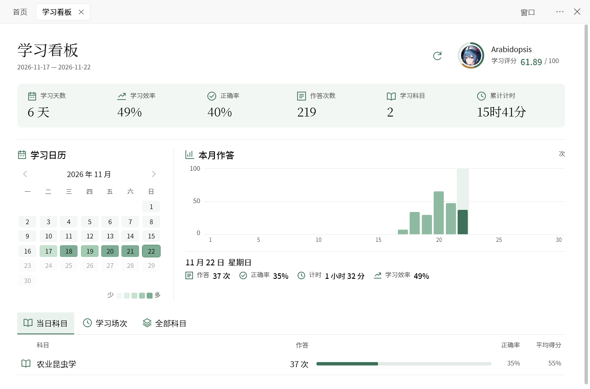
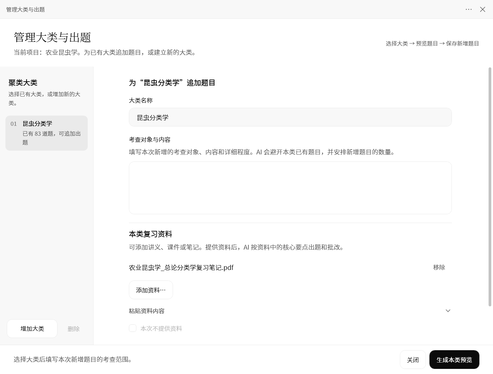
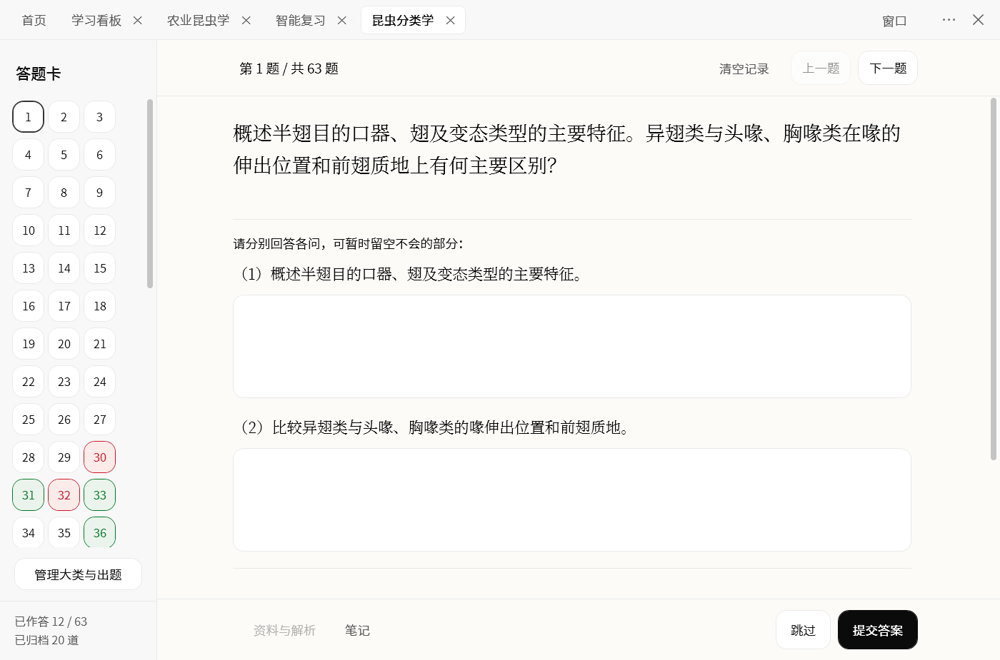
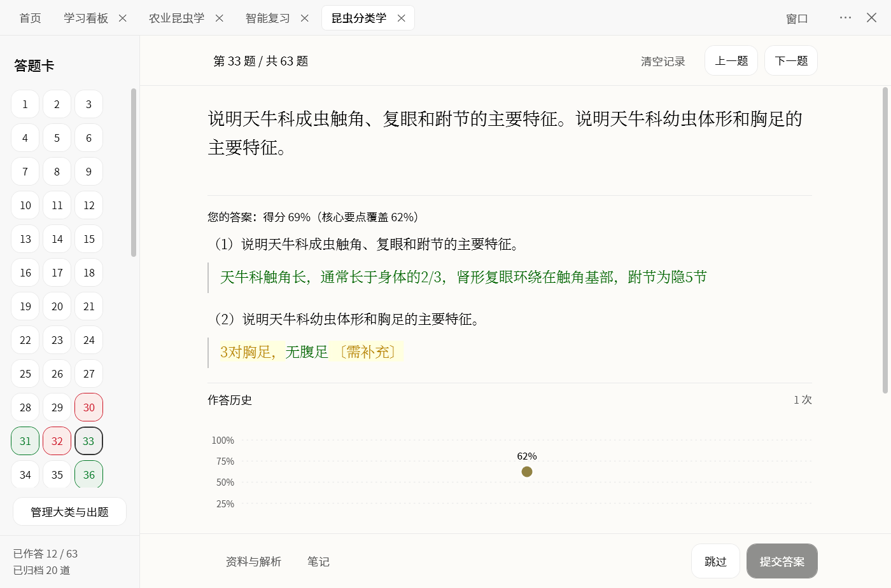
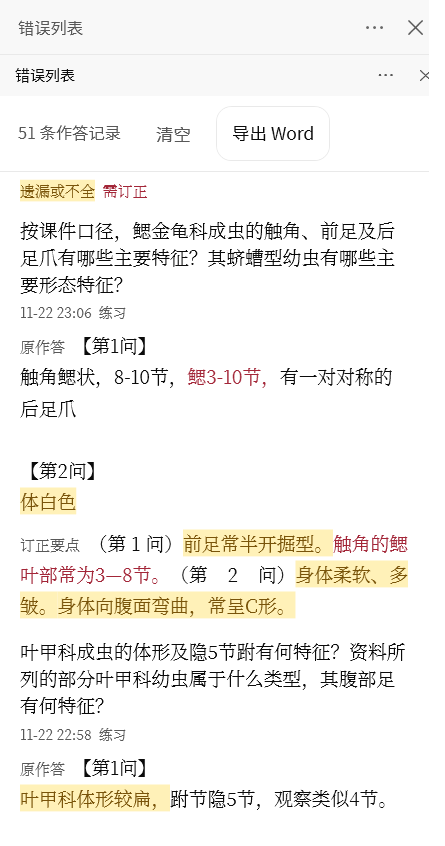
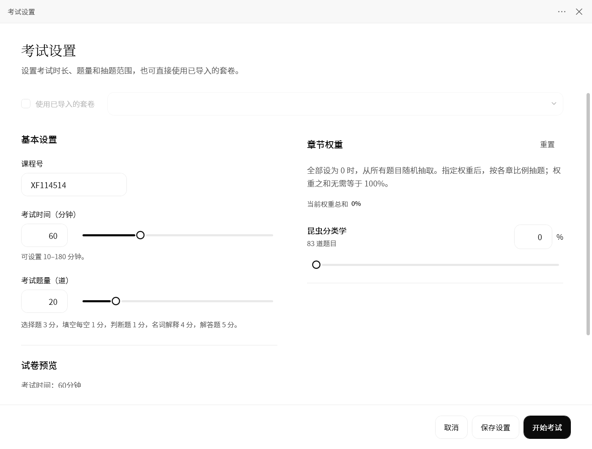

Windows 课程复习软件
ReciteHelper
用课程资料建题，按小问作答和批改。FSRS-6 估计你现在还能记住多少，cFSRS 据此安排要优先复习的小问。

下一道复习题怎么选？
批改结果告诉软件哪些要点还没掌握，记忆模型估计这些要点隔了几天还能想起多少。两者共同决定复习顺序。
- FSRS-6 预测遗忘
- 作答后更新难度和记忆稳定性，再根据间隔计算当前回忆概率。软件以 90% 为默认目标，估算下一次复习的时间。一个项目积累足够记录后，可以用自己的数据重新拟合参数。
- cFSRS 调度小问
- 多问文字题可按小问建立独立的记忆记录。排题时合并小问的分值权重、上次计分和当前回忆概率。智能复习从整个项目里选题，并轮换来自不同原题的小问。
用一道题试算
天牛科成虫与幼虫的形态
设成虫小问答对，幼虫小问只答出一半要点。两问分别占原题 60% 和 40%。
| 小问 | 权重 | 上次计分 | 回忆概率 |
|---|---|---|---|
| 成虫形态 | 60% | 100% | 96% |
| 幼虫形态 | 40% | 50% | 86% |
幼虫形态有未掌握的要点，优先安排复习。
算例采用默认遗忘曲线。成虫和幼虫小问的示例稳定性分别为 21 天和 4 天。
查看回忆概率、掌握度与排题的计算
- 回忆概率
- FSRS-6 遗忘曲线为
R(t,S) = (1 + f × t / S)−w，f = 0.9−1/w − 1。t 为间隔天数，S 为稳定性，默认衰减参数 w 为 0.1542。FSRS-6 公式 - 原题掌握度
- 每个小问的贡献等于「权重 × 上次计分比例 × 当前回忆概率」。把各问的贡献相加，得到原题的预计掌握度。补练一问只更新这一问的计分和记忆状态，其他小问继续按各自的间隔计算。
- 复习优先级
- 软件先安排仍有缺漏且已到重练时间的小问。小问的覆盖缺口等于「权重 ×（1 − 上次计分比例 × 当前回忆概率）」。同类候选中，覆盖缺口较大的排在前面。
学习看板
日历显示每天的作答量。选中一天，可以查看当天练了哪些科目、做了多少题，以及各学习场次的表现。

- 作答次数与得分
- 按日查看作答量，按科目对照正确率和平均得分，并查看练习与考试场次。
- 学习效率
- 用活跃学习时间除以软件在前台的计时时间。输入答案和滚动阅读等操作会计入活跃时间，长时间没有操作则停止累加活跃时间。
- 学习评分
- 头像旁显示学习评分。场次评分以作答质量为主，结合题量、作答节奏和可用的活跃时间记录，再汇总历史与近期表现。
从课程资料到模拟考试
农业昆虫学项目里的习题来自复习笔记。练习留下的批改和作答记录，可以继续用于订正和复习。
按课程范围出题
导入讲义或笔记建立题库，也可以使用规则化复习。比如在「昆虫分类学」大类写明要考哪些科和形态特征，再附上复习笔记。
先预览两道简答题，确认后生成其余题目。已有项目可继续增加大类和题目。


每个小问单独作答
阅读完整题干，再分栏作答。例如先概述半翅目的特征，再比较两个类群的口器和前翅。切换题目后，可以回到本次尚未提交的草稿。
等待判分时，软件可以轮换短填空或选择题，安排反复答错的知识隔开再练。


批改直接标在作答上
各小问分别评分。概念性小问看核心关键词和等义表达，表达性小问看回答方向、条理和必要内容。
答案里的正确内容标绿，错误标红，需要补充的地方标黄。作答历史用百分比分数显示进步轨迹。


把漏答和错答带回资料里查
「资料与解析」先检索相关原文，再按需生成解析。附过材料的规则题会检索对应材料，传统项目还可以用向量检索补足本地搜索的结果。
错误列表保留整道题及原作答，用黄色标漏项、红色标错误，可以整页翻阅或导出 Word。项目笔记会自动保存，笔记、解析和错误列表可以停靠或浮动。
已经掌握的题可归档。题和记录保留在项目中，归档期间退出智能复习和等待判分小题的抽选。


从题库组一套限时试卷
设定考试时间和题量，按章节权重抽题，也可以选择已导入的整套试卷。
交卷后可以查看分数、批改结果和错题。考试记录单独保存，平时的练习答案仍可查阅。


下载 ReciteHelper
Windows 桌面软件。项目、笔记和学习记录保存在本地。使用 AI 出题或批改时，可以在设置里选择已接入的模型服务。